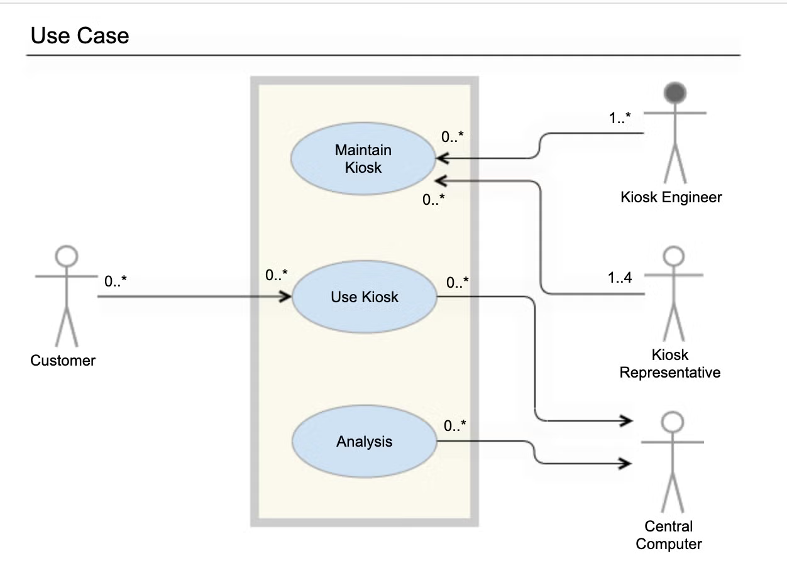
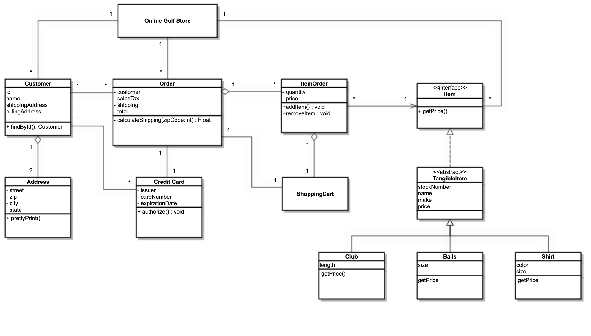
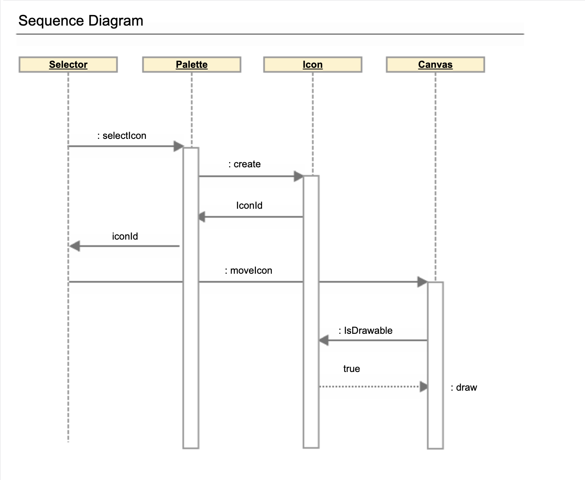
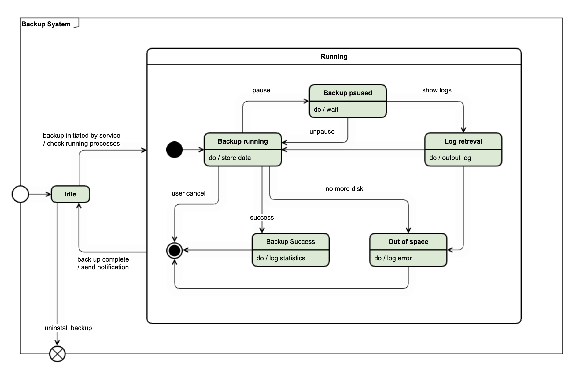

Click me ;)
on üldotstarbeline noteeringukeel keeruline tarkvara, peamiselt suurte
objektorienteeritud projektide spetsifitseerimiseks ja visualiseerimiseks.
UML põhineb sellistel vanematel noteeringumeetoditel nagu Booch, OMT ja OOSE
Use case või siis käitumuslikud diagrammid on kasutatud, et kirjeldada
tegevusi, mida mingi süsteem or süsteemid peab täitma, võimalikult ka
kooskõlas teiste kasutajatega.
Business Use Case on kasutatud, et esindada äritegevusi, funktsioone
või protsesse, mis on teostatud mudelleeritud ettevõttes. Business
actor esindab rolli, mida mängib mingi inimene või süsteem, kes ei
kuulu ettevõttesse (klient, investor). Business Use Case peab näitama
nähtava väärtusega tegevusega ärinäitlejale.

Klassi diagrammide peamine ülesanne on kaardistada rakenduse
staatiline struktuur, kasutades klasse ja kasutajaliideseid.
Projekti kui staatiliste elementide kogumi ülevaate abil saavad
arendajad ja arhitektid selge arusaama süsteemi arhitektuurist
enne ühegi koodirea kirjutamist.
Klassiskeemid on mitmekülgsed ja olulised tarkvaraarenduse
erinevates etappides:

Järjestusdiagramm a.k.a sündmuste diagramm, illustreerib objektide vahelisi
interaktsioone kronoloogilises järjekorras. Järjestusdiagrammid on erakordselt
kasulikud mitmesuguste tarkvaratehnika ja ärianalüüsi ülesannete jaoks:

Click me ;)
Olekumasinate diagrammid või olekudiagrammid modelleerivad süsteemi
käitumist mitmete üleminekute ajal, nii et disainer näeb süsteemi
ainukest "olekut" mis tahes punktis, arvestades näidatud välised
stiimuleid
